|
|
| crabs text index | photo index |
| Phylum Arthropoda > Subphylum Crustacea > Class Malacostraca > Order Decapoda > Brachyurans > Family Portunidae |
| Mottled
swimming crab Thalamita sp.* Family Portunidae updated Dec 2019 Where seen? This well camouflaged swimming crab seen on some of our shores on coral rubble and reefs. It is particularly active at night. Features: Body width 4-5cm. Body rectangular, sides of the body with 5 dark blue-light blue-brown tipped spines, the fourth spine is tinier than the others.The eyes are very wide apart, between the eyes are 4-6 rounded lobes. Last pair of legs are paddle-shaped. Body has fine hairs that trap sediments, colour mottled greenish, brown, bluish. The edge of the body and segments on the body upper surface has a fine blue-brown banded pattern. |
 Pulau Semakau, Nov 09 |
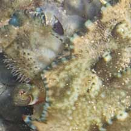 4 lobes between the eyes. Fine banded pattern on body edge and body upper surface. |
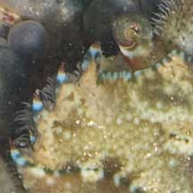 5 spines on the side of the body. Fourth spine smaller than other spines. |
|
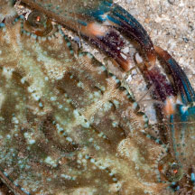 Sometimes 6 lobes betweeen the eyes. |
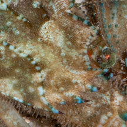 Fourth spine smaller than other spines. |
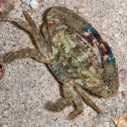 Pulau Senang, Jun 10 |
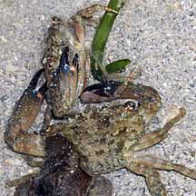 About to mate? Terumbu Pempang Laut, Aug 10 |
 Caught an amphipod? Cyrene, Feb 26 Photo by Yan Le Su on facebook. |
*Species are difficult to positively identify without close examination.
On this website, they are grouped by external features for convenience of display.
| Mottled swimming crabs on Singapore shores |
On wildsingapore
flickr
|
| Other sightings on Singapore shores |
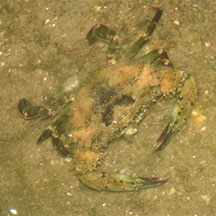 Punggol, Sep 18 Photo by Dayna Cheah on facebook. |
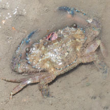 Changi Creek, Jul 23 Photo by Marcus Ng on facebook. |
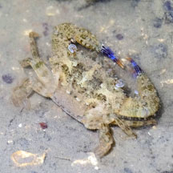 Betint Bronok, Jun 25 Photo shared by Adriane Lee on facebook. |
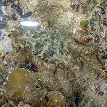 Terumbu Pempang Tengah, Jun 20 Photo by Jonathan Tan on facebook. |
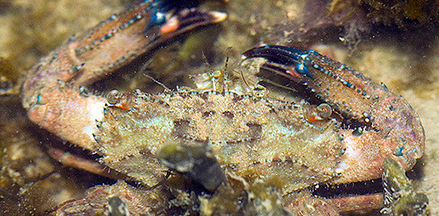 Sisters Islands, May 07 Photo shared by Marcus Ng on facebook. |
Links
|